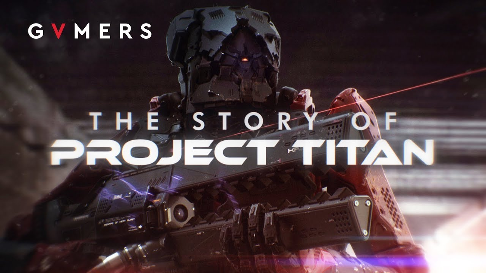
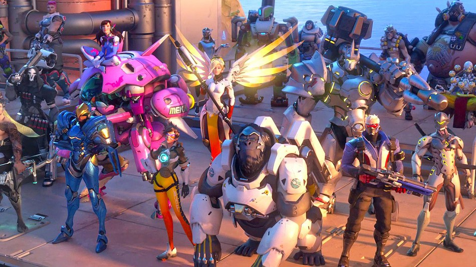
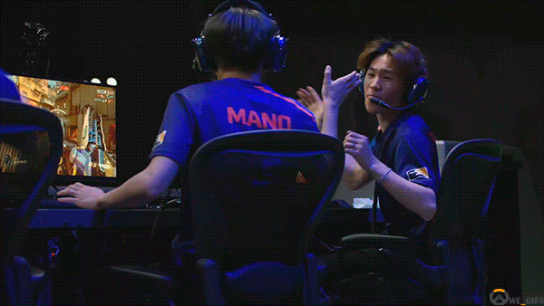

Game Development and Design in Overwatch
An In-Game Engine Built from Scratch for the next big Electronic Sports Title
Initial Game Development of Overwatch

The outcome of Blizzard's decision to cancel the massively multiplayer online role-playing game Titan in 2013, a project that had been in development for about seven years, was the newly successful game of Overwatch. While most others assigned to the project were transferred to other departments within Blizzard, a small team of about 40 people, led by director Jeff Kaplan, were tasked to come up with a new concept for a game in a few months. After a few months the new department, led by Jeff Kaplan decided to back the idea of a hero team-based shooter which was inspired by games like Team Fortress 2 and multiplayer online battle arenas. The development team started with previous assets developed for the previous title, Titan, to demonstrate the proof-of-concept, and the team was eventually greenlit to build and develop the game of Overwatch, which was the first new intellectual property that Blizzard had developed since StarCraft.
The intra-company experience of Titan's cancellation served to help drive the narrative and setting. They created an optimistic vision of the near-future, some decades following the Omnic Crisis and the formation and collapse of the peacekeeping Overwatch group. This allowed them to create a diverse cast of characters, include non-human ones, and colorful settings from around the globe. The Overwatch team continues to support the game through free updates, the introduction of new characters, maps, game modes, cosmetic items, seasonal events, and external media to support the game's narrative, as well as continuously tuning how the individual heroes play by monitoring meta-game statistics and user feedback.
A Daunting Task - The Development of a unique and state of the art in-game Engine
Information about Blizzard's newly built engine that Overwatch runs on is very limited and lackluster. Thankfully, in a 2017 event named Blizzcon, Jeff Kaplan, the head director and main developer of Overwatch, showcased the technical side of the developmental process of Overwatch. The video above gives us a very intriguing look into Blizzard's initial design process from start to finish for Overwatch. Starting from a very clunky and oftentimes unresponsive game Blizzard, was able to build an engine that was suitable enough to match the challenges and limits that their game, Overwatch, would require. Blizzard began with a very primitive and simple process and that was to transfer their character designs inside the game itself. Once they were able to complete that task they started to build features present within a common first person shooter game. One of the most important features that they developed was the shooting of projectiles as well as the hitboxes of the various characters within the game. Blizzard had to make sure that hitboxes were fair and impactful with the overall goal to make sure that there was a fair representation of skill within the gameplay of Overwatch. After the development of the "mechanical" aspects of Overwatch, Blizzard started to focus on certain abilities and unique aspects, in the form of interactions, for each character within Overwatch. More specifically, it was a greta challenge for the development team to make sure the interactions were fluid and looked "clean" from an outside perspective.
Gameplay Direction - The Next Major Competitive Electronic Sport

Overwatch was designed from the very beginning to be a major representative within the Esports industry. In order to make this goal a reality, Blizzard had to direct it's gameplay towards the competitive community and make sure that off of it's gameplay design alone it attracted hardcore gamers who were interested in becoming the best. The first steps towards this goal was to make sure the gameplay itself rewarded individual skill but also represented important aspects of team based strategy. Blizzard made Overwatch a 6 versus 6 game which represented the team based aspects of strategy and also made multiple roles defined for every individual in order to make sure that an individual could shine if they were great enough.
The Importance of a Matchmaking Ladder

The next step for blizzard was to create a fair and balanced Matchmaking Ladder system where an individual could work with others to prove his or her own individual worth within the competitive environment of Overwatch. This particular aspect is massively important for any game looking to represent themselves within the Esport's industry because it is important that there is a system in place that can accurately and efficiently judge who is the best within their respect fields.
References:
https://playoverwatch.com/en-us/esports/
https://overwatchleague.com/en-us/
https://www.youtube.com/embed/nfxDIkLE3hs